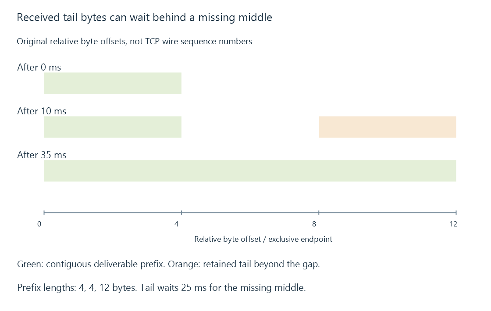

TCP: an ordered byte stream for media delivery
TCP supplies an ordered reliable byte stream, recovering missing transport data while leaving message structure, encryption and successful media decoding to higher layers.
TCP carries an ordered stream of bytes. If data is lost or arrives out of order, the transport can recover the missing portion and present the bytes in order to the application.
That reliable stream is useful for HTTP requests and media delivery. Reliability does not mean every byte arrives before the viewer’s playback deadline.
A missing middle holds up a later tail
Use this original simplified receive trace:
[
{"arrivalMs": 0, "offset": 0, "data": "ABCD"},
{"arrivalMs": 10, "offset": 8, "data": "IJKL"},
{"arrivalMs": 35, "offset": 4, "data": "EFGH"}
]
Offsets are relative byte positions in a teaching stream. They are not wire sequence numbers from a TCP capture.
After the first arrival, the application can receive ABCD. After the second, IJKL is present but the intervening EFGH is missing. Only after the third arrival is the complete ordered prefix ABCDEFGHIJKL available.

The later tail waited twenty-five milliseconds in this model. A media buffer can absorb some such delay; an empty playback reserve cannot present missing input merely because later bytes have arrived.
Acknowledging the tail does not remove the gap
For the original trace, the cumulative contiguous byte boundary is four after both the first and second arrivals. It becomes twelve after the missing middle arrives.
Selective acknowledgment can describe received ranges beyond that contiguous boundary when the option is supported. An original range [8,12) reports the retained IJKL tail while the cumulative boundary remains four.
That information can help the sender recover the missing range without treating every later byte as absent. It does not make the application receive IJKL ahead of the missing middle in the ordered stream.
A duplicate arrival of ABCD also does not deliver a second ABCD to the byte-stream consumer. Sequence context recognizes those bytes as already received; duplication in a network trace and duplication in application media are different observations.
The example omits wire sequence origins, options, timers and the chosen loss-recovery algorithm. Its purpose is to expose which bytes are received, which missing interval needs recovery and which contiguous prefix is usable.
TCP does not preserve application message boundaries
An application can write a request in several operations, and the receiver can read it in different-sized operations. Transport segment boundaries and application read boundaries are not a universal record format.
HTTP, a framed binary protocol or another application layer defines where its messages begin and end.
Likewise, a video frame is not normally “one TCP packet.” One encoded picture can span transport data, while one received block can contain several media units.
Two different windows constrain sending
The receiver advertises how much additional data its receive capacity can accommodate. Congestion control separately limits the sender’s permitted in-flight work according to the path’s behavior.
For an original simplified budget, let the receive allowance be 64 KiB and the congestion allowance 16 KiB. The smaller allowance constrains the stated in-flight data budget to 16 KiB before other details.
Increasing the receive buffer alone does not raise that sixteen-KiB congestion allowance. Conversely, a large path allowance cannot make an application consume a full receive buffer faster.
This reduced comparison illustrates separate constraints; it is not a throughput benchmark or a complete TCP window calculation.
In-flight capacity and round-trip time constrain progress
Continue with an original fixed-window exercise:
{
"receiveWindowBytes": 65536,
"congestionWindowBytes": 16384,
"alreadyInFlightBytes": 4096,
"roundTripSeconds": 0.05
}
KiB means 1024 bytes. With the stated smaller 16-KiB limit, four KiB already in flight leaves at most twelve KiB of additional allowance in this simplified comparison.
If a steady sender can keep only 16 KiB unacknowledged over a fifty-millisecond round trip, the window/round-trip calculation gives 327,680 bytes per second, or 2.62144 Mbit/s. This excludes other overhead and assumes the stated window remains fixed.
That can be far below a link’s advertised capacity. Increasing only the receiver’s 64-KiB window does not change the smaller congestion limit in this exercise.
Real congestion control adjusts its permitted work, acknowledgments can change over time, and application pauses can leave capacity unused. The arithmetic is a conditional ceiling rather than a prediction for a particular server. It explains why link speed and actual transport progress need different observations.
An acknowledgment is not a playback result
TCP acknowledgments describe the transport’s received byte progress. They do not establish that Emby accepted a request, the client parsed the media, or the screen displayed a frame.
A successfully delivered error response is also successful byte delivery. Application status needs its own interpretation.
TCP itself does not provide the HTTPS certificate/peer authentication used by TLS. Reliable delivery, connection identity and encrypted application transport are different properties.
Playback buffering follows the retained media after transport delivery. QUIC, covered by its own specification, can provide different stream-loss coordination over UDP rather than inheriting TCP’s single ordered byte stream.
See Also
- UDP datagrams and application delivery policy
- Network ports, listeners and connection endpoints
- Buffering, ready media and playback reserve
- HTTP range requests for media resources